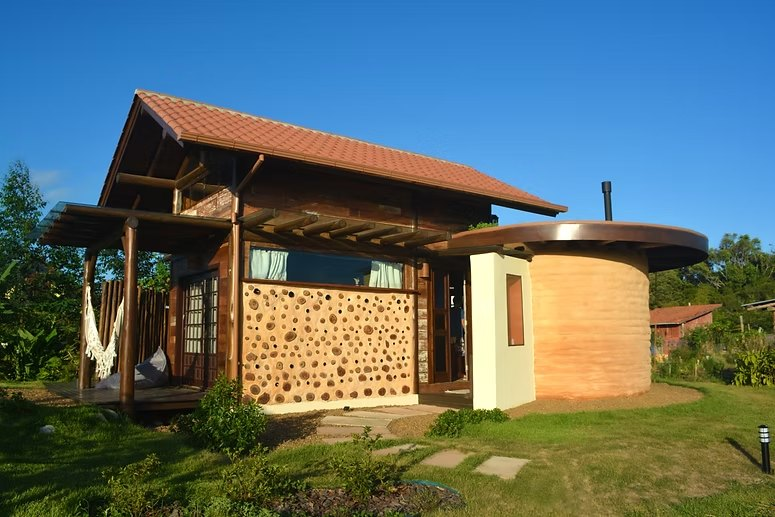
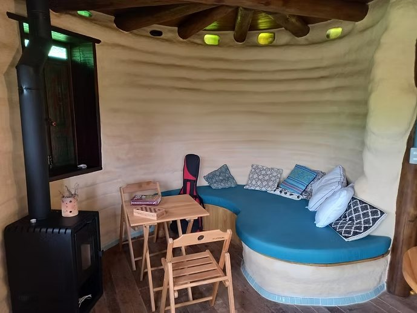
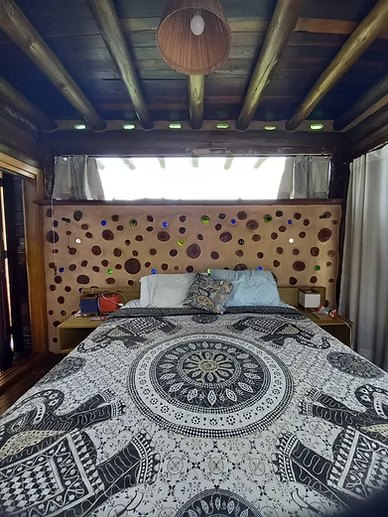
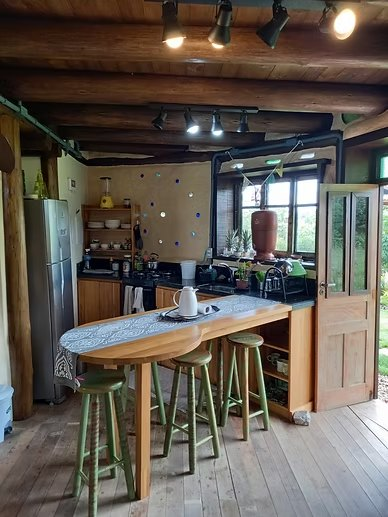
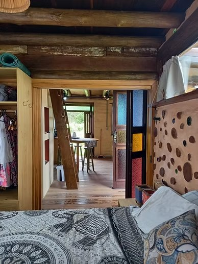
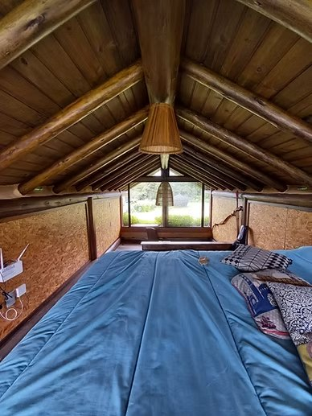
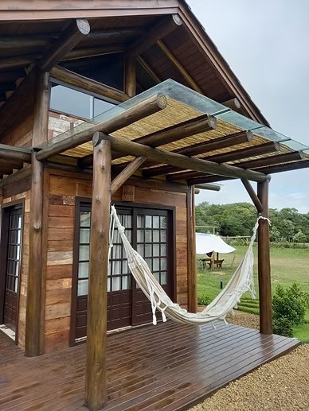
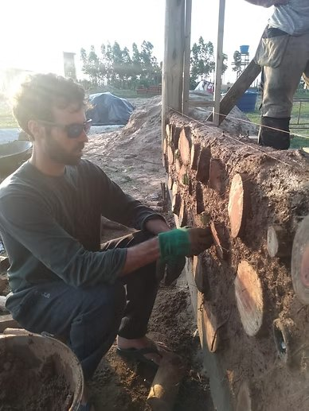
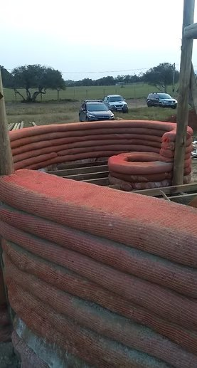
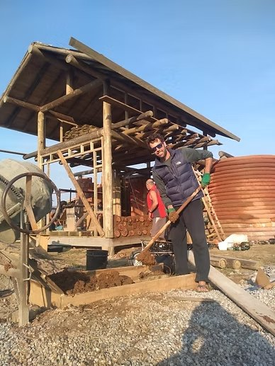

Parede de cordwood
Toras curtas de madeira assentadas na argamassa, com fundos de garrafa de vidro entremeados. Isola bem, custa pouco e vira vitral quando o sol bate.
Uma casa pequena que usa quase tudo o que a bioconstrução tem de melhor: madeira roliça aparente, parede de cordwood com fundos de garrafa fazendo vitral, torre curva em superadobe e bambu sombreando a entrada. Dois pavimentos, muita luz colorida e conforto térmico o ano inteiro.

Nada de revestimento escondendo a estrutura: a madeira roliça, as toras de cordwood e as voltas do superadobe ficam à mostra e são o próprio acabamento da casa. O resultado é uma construção quente, texturizada e que envelhece bem.









Materiais locais, de baixo impacto e aplicados com critério técnico.
Toras curtas de madeira assentadas na argamassa, com fundos de garrafa de vidro entremeados. Isola bem, custa pouco e vira vitral quando o sol bate.
A torre cilíndrica é feita de tubos preenchidos com terra e empilhados em espiral. As voltas ficam aparentes como acabamento, e a massa térmica segura o calor no inverno e o frescor no verão.
Troncos de manejo usados inteiros, como pilar, viga e barrote do forro. Menos processamento, menos desperdício e uma presença que nenhum acabamento imita.
O beiral generoso protege as paredes de terra da chuva e sombreia as aberturas no verão — a proteção mais barata que uma bioconstrução pode ter.
Bambu tratado sombreando o deck de entrada, com encaixes tradicionais e acabamento natural. Leve, resistente e de montagem rápida.
Faixa de seixos rolados contornando a construção, recebendo a água do telhado e devolvendo ao solo em vez de mandar tudo para a rua.
Bioconstrução é trabalho artesanal com critério técnico. Cada tora da parede de cordwood foi assentada na mão, e a torre de superadobe subiu volta por volta, terra socada dentro do tubo.



Cada obra é diferente, mas todas partem do mesmo princípio: construir com o lugar, e não contra ele.
Conte o terreno que você tem e a casa que você imagina. A gente ajuda a transformar a ideia em projeto e o projeto em obra.